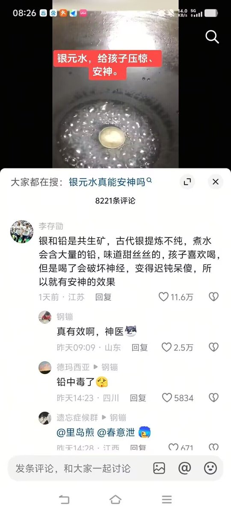

サイバー環状線
@CyberKanjousen
「守株待兔」的道理和这个一模一样。
河南人看到有兔子撞到木头上，便以为今后天天有兔子撞到木头上；基本盘看到偏方「治」好了一个人的病，便以为偏方能治好所有人的病。
这就是把「偶然事件」当成「必然事件」看待的结果。如此看待事情的人，认知普遍低下。
（这样说環状線的认知也不高，以前 玩米游的时候，搞出了一个十连双金，便以为今后也一定常常十连双金，但实际上環状線在那之后几乎一直在吃保底……）

ふうげつを友とする
@Fuugetsu_808
为什么老一辈对中医 偏方等所谓的”传统“都有路径依赖？ 没有经过科学论证的土办法就敢给一个活人使用 我觉得这是一种愚昧和无知 https://t.co/OvkRxnWbtZ